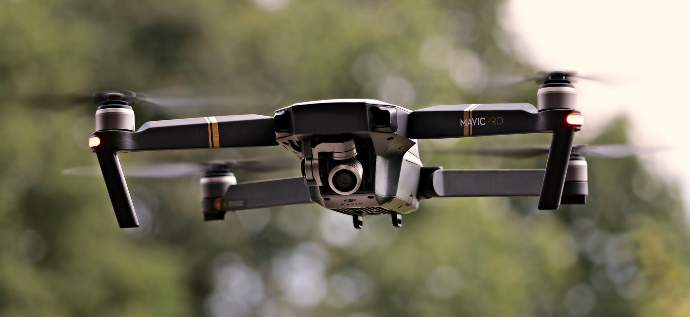

Facts
Drones do not just track and survey the enemy. They bear powerful weapons and are lethal devices.
The first country to manufacture drones was Israel. Israel Aerospace Industries has production facilities about 24 countries around the world.
According to the Federal Bureau of Investigation, attack drones have killed about 4756 people. Many were children.
The police use them for tracking purposes. The aerial footage they capture serves as evidence to convict criminals.
The first country to manufacture drones was Israel. Israel Aerospace Industries has production facilities about 24 countries around the world.
According to the Federal Bureau of Investigation, attack drones have killed about 4756 people. Many were children.
The police use them for tracking purposes. The aerial footage they capture serves as evidence to convict criminals.
